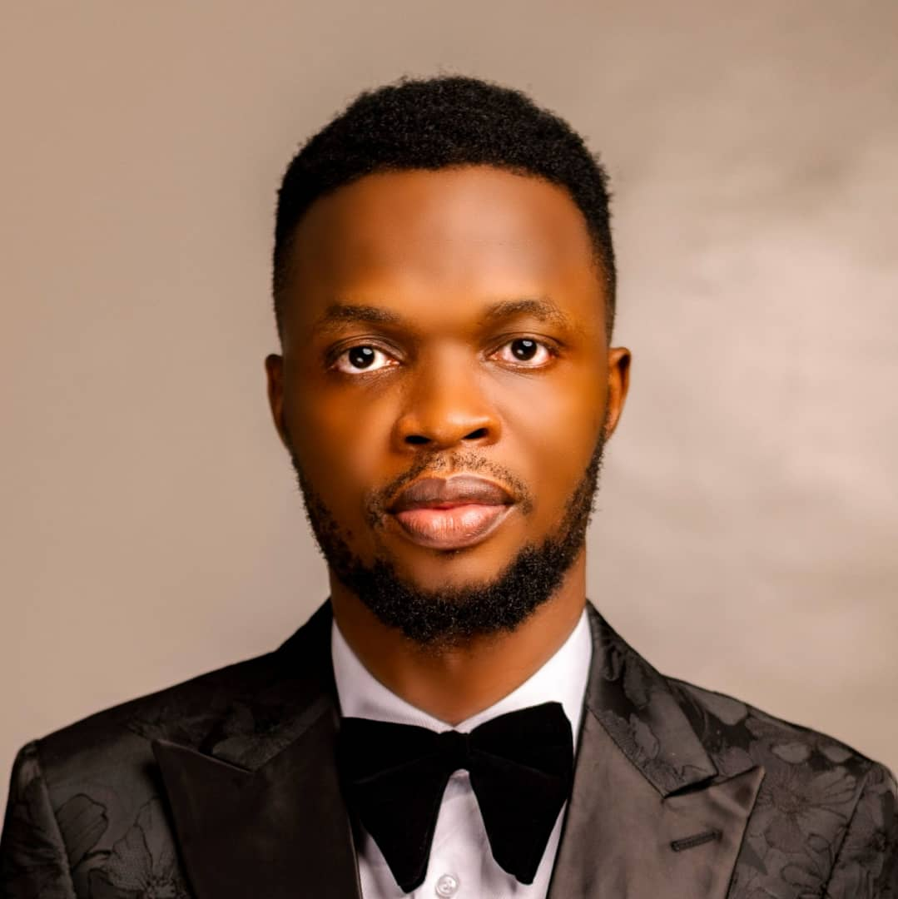
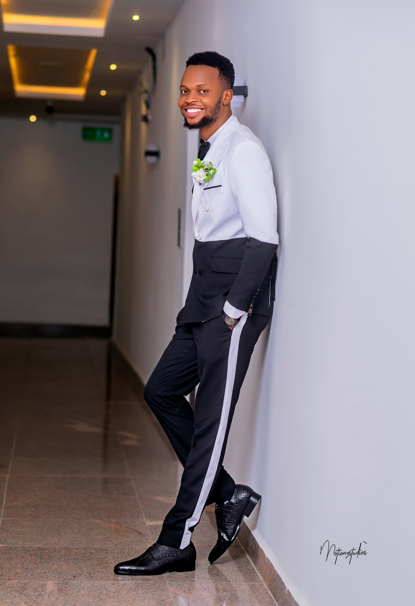
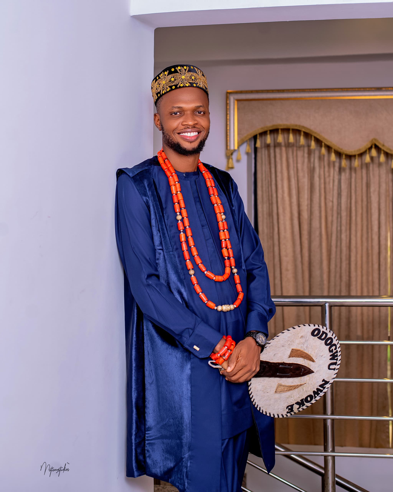

I am Chidozie Abraham Ugwu
Born and raised in Osun State, I am the first child in a family of five, a unique position that has shaped my sense of responsibility and leadership. My heritage is a rich blend of cultures, as I am the son of an Igbo father and a Yoruba mother. Growing up in this culturally diverse environment taught me the importance of unity, adaptability, and embracing different perspectives. I take pride in my ability to communicate fluently in English, Yoruba, and Igbo, a skill that allows me to connect with people from various backgrounds seamlessly.
A fervent Chelsea FC supporter, I find joy and inspiration in the beautiful game of football, which teaches resilience, strategy, and the value of collaboration. My passion for sports complements my technical pursuits, creating a balanced lifestyle that keeps me motivated and focused on my goals. With a deep appreciation for my roots and an unwavering drive to excel, I aim to contribute meaningfully to my community and beyond through technology and innovation.
I am an AltSchool Cloud Engineering Student
 In pursuit of my passion for technology, I studied Computer Science at the University of Nigeria, where I graduated in 2018. During my time at the university, I developed a deep love for working with computers and exploring how they can solve real-world problems. My academic journey equipped me with the technical skills and problem-solving mindset needed to thrive in the tech industry. Beyond academics, my love for sports, particularly basketball, has played a significant role in shaping my discipline and teamwork skills, which I apply in both my personal and professional life.
My voice in real time.
My face and voice in real time